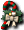

官方公告
【概要】
舉辦紀念聖誕節的活動。
從世界各地的怪物身上取得的活動道具「聖誕裝飾箱」，
獲得各種裝飾來完成漂亮的聖誕樹吧。
完成漂亮的聖誕樹，就能取得可獲得稱號和
各種道具的活動道具「迷你聖誕樹」。
大量完成漂亮的聖誕樹，度過熱鬧的聖誕節吧！
【期間】
2010年12月22日（水）維護～2011年1月5日（水）維護
【內容】
１．從世界各地的怪物取得活動道具「聖誕裝飾箱」。
２．使用「聖誕裝飾箱」取得聖誕樹的裝飾素材。
３．點擊出現在萊貝雅鎮的聖誕樹。
※裝飾聖誕樹需要15個裝飾素材。
４．對聖誕樹進行15次裝飾， 聖誕樹
聖誕樹
會變化4個階段而完成。
５．聖誕樹完成後可以獲得獎勵。
６．對出現在萊貝雅鎮的活動NPC「加爾登」說話，
會依裝飾完成的聖誕樹棵數
發放稱號。
聖誕裝飾箱會出的東西
※一個箱子出一個裝飾品（聖誕老人裝飾有Wei1）
聖誕老人裝飾、鈴鐺裝飾、漂亮的裝飾、 假花裝飾、雪花裝飾
假花裝飾、雪花裝飾
取得迷你聖誕樹時的效果
| 標記 | 效果 | 持續時間 |
| 和藹的心１ | 狀態ALL+ 5 HP3% | 約60分鐘 |
| 和藹的心２ | 狀態ALL+ 7 HP5% | 約120分鐘 |
| 和藹的心３ | 狀態ALL+10 HP10% | 約240分鐘 |
| 寒冷的忍耐１ | AC -5 MC -5 AAR2 SAR2 | 約60分鐘 |
| 寒冷的忍耐２ | AC -7 MC -7 AAR3 SAR3 | 約120分鐘 |
| 寒冷的忍耐３ | AC-10 MC-10 AAR5 SAR5 | 約240分鐘 |
| 冬天的熱情 １ | DAM3 HIT3 MDAM2 MHIT2 | 約60分鐘 |
| 冬天的熱情 ２ | DAM5 HIT5 MDAM3 MHIT3 | 約120分鐘 |
| 冬天的熱情 ３ | DAM7 HIT7 MDAM5 MHIT5 | 約240分鐘 |
獎賞
完成聖誕樹就能獲得「迷你聖誕樹」。
・以下是迷你聖誕樹會出的道具
 雨之耳環
雨之耳環
 空氣耳環
空氣耳環
 石耳環
石耳環
金屬耳環
 火焰戒指
火焰戒指
 烈焰戒指
烈焰戒指
[活動]羊毛帽
・以下是迷你聖誕樹會出的稱號
| 名稱 | 說明 | 限制 | 職業 | Wei | 取得方式 |
| (稱號)聖誕快樂 | 在神之領域一邊裝飾聖誕樹，一邊度過愉快的聖誕節 | Lv1 | 戰修盜騎阿聖魔預吟 | 0 | 2010X'mas活動 |
| (稱號)聖誕樹英雄 | 論裝飾聖誕樹，誰都不會輸！ | Lv1 | 戰修盜騎阿聖魔預吟 | 0 | |
| (稱號)聖誕樹惡魔 | 為了做出漂亮的樹願意犧牲一切。就算要打破雪人･･･ | Lv1 | 戰修盜騎阿聖魔預吟 | 0 | |
| (稱號)聖誕的助手 | 協助聖誕老爺爺，為了營造聖誕氣氛竭盡全力幫忙 | Lv1 | 戰修盜騎阿聖魔預吟 | 0 | |
| (稱號)聖誕的勇士 | 因協助聖誕老爺爺竭盡全力營造聖誕氣氛而成為勇士 | Lv1 | 戰修盜騎阿聖魔預吟 | 0 | |
 雪人召喚捲軸 雪人召喚捲軸 | 可以和可愛的雪人一起享受狩獵。只能召喚一次，維持20分鐘。雙擊使用。 | Lv1 | 戰修盜騎阿聖魔預吟 | 0 | |
| 魯道夫召喚捲軸 | 可以召喚可愛的馴鹿「魯道夫」讓牠參加戰鬥。一次召喚最多持續10分鐘。不過魯道夫被攻擊而HP歸零時及主人倒下時也會消失，請注意。雙擊使用。 | Lv1 | 戰修盜騎阿聖魔預吟 | 0 | |
 聖誕手杖 | 平常只是裝飾用，但遇到敵人時可以當武器使用。材質非常堅硬的聖誕杖。修道士不能裝備。 ※武器外觀，期限30天 | Lv1 | 戰盜騎阿聖魔預吟 | 0 |
留言
目前顯示最新的10件。請參閱留言頁面
- 從挖掘碉堡（10,11,12,16,22,23,24確認過）、魔界村地城（9確認過）、海盜村地城（2確認過）的敵人身上也掉了聖誕裝飾箱 -- 2010-12-31 (五) 10:30:15
- ↑↑是什麼樣的稱號呢・・・？ -- 2010-12-31 (五) 23:18:37
- 做100棵的話可以拿到「聖誕裝飾師」這個稱號。 -- 哈迪斯的預言者? 2011-01-01 (六) 02:49:31
- 雖然是理所當然，但1棵什麼都拿不到。 -- ｈ? 2011-01-01 (六) 23:28:47
- 還有做的棵數似乎會累積不會減少。（也許是現在才說的情報） 另外，一次做幾百棵能不能拿到下位的稱號不明。 -- ｈ? 2011-01-01 (六) 23:30:15
- ↑與其說下位的稱號，從NPC拿到的稱號不是只有1個嗎？做了100棵的話製作棵數會重置喔。 -- 2011-01-02 (日) 02:04:04
- ↑是指做100棵拿到第1個稱號，再做100棵拿到第2個稱號嗎？（因為我才做了1棵…） -- ｈ? 2011-01-02 (日) 09:49:32
- 上面的稱號可以從迷你聖誕樹獲得。和100棵的稱號是兩回事 -- t? 2011-01-03 (一) 07:36:25
- 因為凱蒂＆獵人摩斯。。。。。。很弱（汗 -- 2011-01-04 (二) 17:01:31
- 雖然100棵不可能，但托迷你聖誕樹的福，拿到聖誕樹惡魔了！幸運 -- [[★聖職者・ω<]] 2011-01-04 (二) 17:06:04
- &#